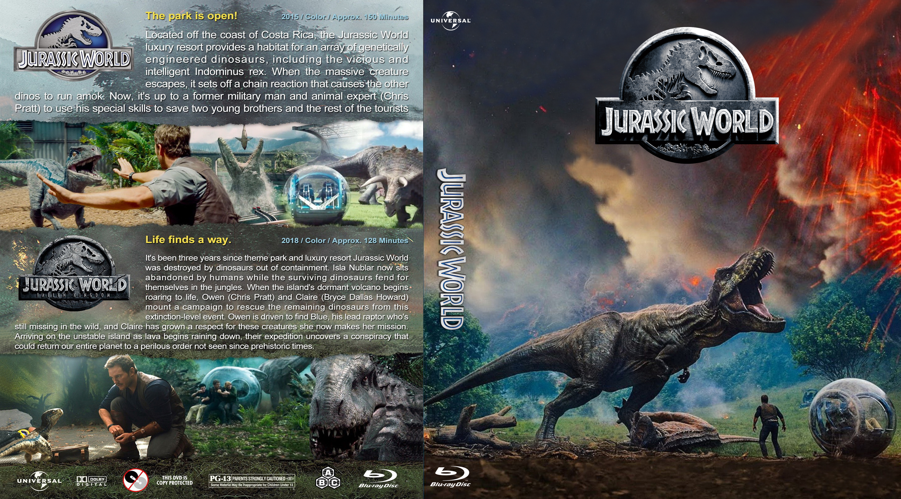
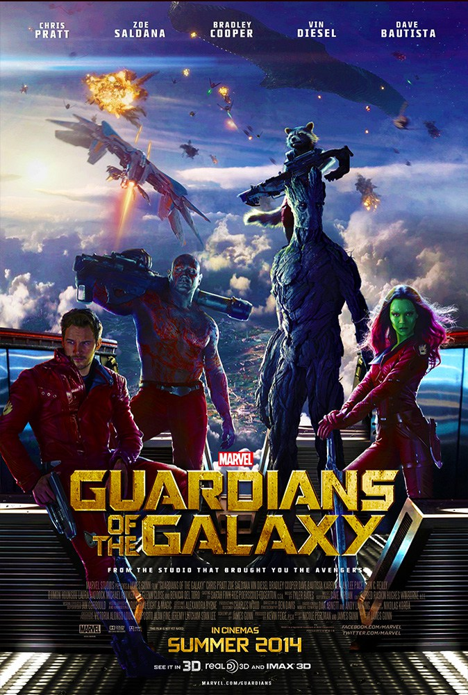
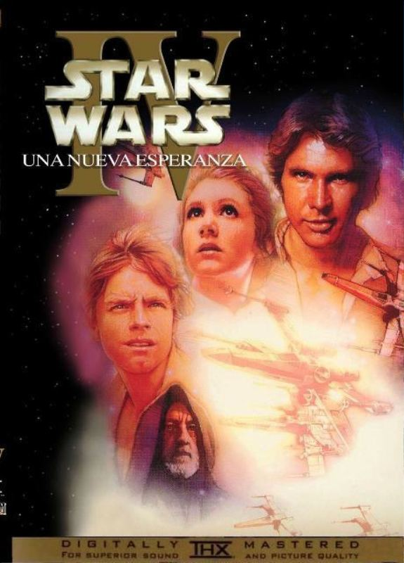
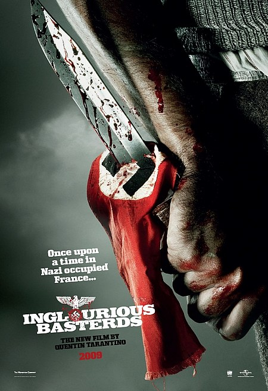
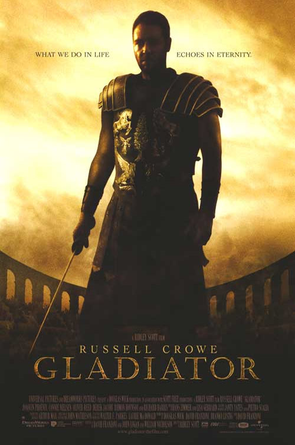
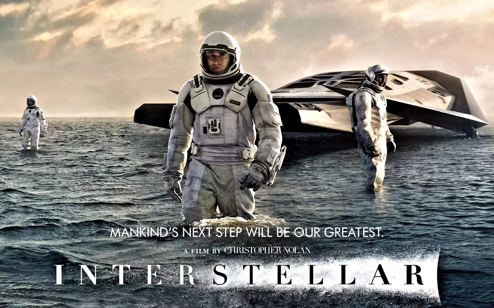
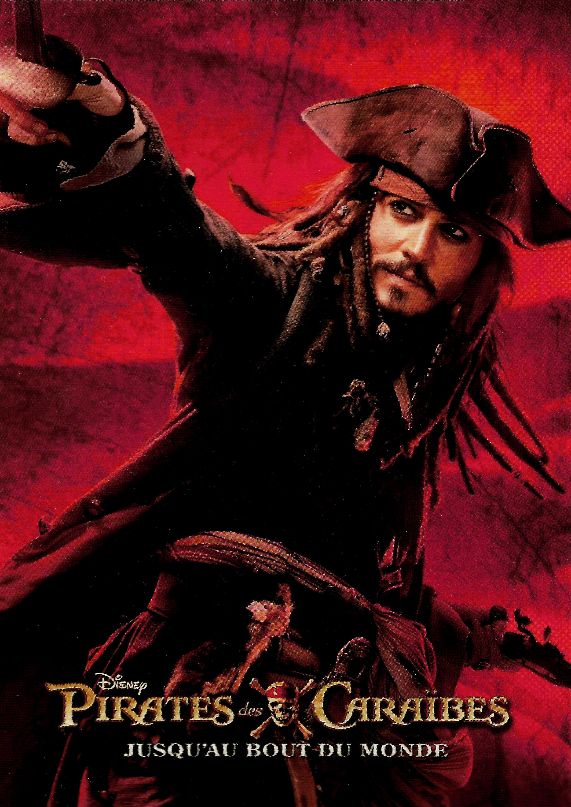

5.1: Jurassic World
Ratings : 🌟 7.0
Genre :ActionAdventureSci-Fi
Release Date : 12 June 2015
Watch-Time : 2h 4min
Director : Colin Trevorrow
Starring : Chris Pratt, Bryce Dallas Howard, Vincent D'Onofrio, Ty Simpkins, Nick Robinson, Omar Sy, BD Wong, Irrfan Khan
Box-Office : $1.670 billion
Storyline:
Twenty-two years after the original Jurassic Park failed, the new park, also known as Jurassic World, is open for business. After years of studying genetics, the scientists on the park genetically engineer a new breed of dinosaur, the Indominus Rex. When everything goes horribly wrong, will our heroes make it off the island?
5.2: To Be a Soldier
Ratings : 🌟 8.5
Genre : ActionAdventureDrama
Release Date : 1 January 2018
Watch-Time : ?
Director : Adam Dufour
Starring : Jacob Dufour, T.L. Bridger, Wayne E. Brown
Box-Office :
Storyline:
A British insurance agent enlists the help of an ex-Army ranger to rescue his sister, who has become entangled with ISIS.
4.1: Guardians of the Galaxy Service
Ratings : 🌟 8.0
Genre : ActionAdventureComedy
Release Date : 1 August 2014
Watch-Time : 2h 1min.
Director : James Gunn
Starring : Chris Pratt, Zoe Saldana, Dave Bautista, Vin Diesel, Bradley Cooper, Lee Pace, Michael Rooker, Karen Gillan, Djimon Hounsou, John C. Reilly, Glenn Close, Benicio del Toro
Box-Office : $772.8 million
Storyline:
After stealing a mysterious orb in the far reaches of outer space, Peter Quill from Earth is now the main target of a manhunt led by the villain known as Ronan the Accuser. To help fight Ronan and his team and save the galaxy from his power, Quill creates a team of space heroes known as the "Guardians of the Galaxy" to save the galaxy.
4.2: Star Wars: Episode I - The Phantom Menace
Ratings : 🌟 6.6
Genre : ActionAdventureFantasy
Release Date : 10 October 2003
Watch-Time : 2h 16min.
Director : George Lucas
Starring : Liam Neeson, Ewan McGregor, Natalie Portman, Jake Lloyd, Ian McDiarmid, Anthony Daniels, Kenny Baker, Pernilla August, Frank Oz
Box-Office : $1.027 billion
Storyline:
The evil Trade Federation, led by Nute Gunray is planning to take over the peaceful world of Naboo. Jedi Knights Qui-Gon Jinn and Obi-Wan Kenobi are sent to confront the leaders. But not everything goes to plan. The two Jedi escape, and along with their new Gungan friend, Jar Jar Binks head to Naboo to warn Queen Amidala, but droids have already started to capture Naboo and the Queen is not safe there. Eventually, they land on Tatooine, where they become friends with a young boy known as Anakin Skywalker. Qui-Gon is curious about the boy, and sees a bright future for him. The group must now find a way of getting to Coruscant and to finally solve this trade dispute, but there is someone else hiding in the shadows. Are the Sith really extinct? Is the Queen really who she says she is? And what's so special about this young boy?
3.1: Inglourious Basterds
Ratings : 🌟 8.3
Genre : DramaAdventureWar
Release Date : 21 August 2009
Watch-Time : 2h 33min.
Director : Quentin Tarantino
Starring : Brad Pitt, Christoph Waltz, Michael Fassbender, Eli Roth, Diane Kruger, Daniel Brühl, Til Schweiger, Mélanie Laurent, August Diehl
Box-Office : $321.5 million
Storyline:
In German-occupied France, young Jewish refugee Shosanna Dreyfus witnesses the slaughter of her family by Colonel Hans Landa. Narrowly escaping with her life, she plots her revenge several years later when German war hero Fredrick Zoller takes a rapid interest in her and arranges an illustrious movie premiere at the theater she now runs. With the promise of every major Nazi officer in attendance, the event catches the attention of the "Basterds", a group of Jewish-American guerrilla soldiers led by the ruthless Lt. Aldo Raine. As the relentless executioners advance and the conspiring young girl's plans are set in motion, their paths will cross for a fateful evening that will shake the very annals of history.
3.2: Gladiator
Ratings : 🌟 8.5
Genre : ActionAdventureDrama
Release Date : 5 May 2000
Watch-Time : 2h 35min.
Director : Ridley Scott
Starring : Russell Crowe, Joaquin Phoenix, Connie Nielsen, Oliver Reed, Derek Jacobi, Djimon Hounsou, Richard Harris
Box-Office : $460.5 million
Storyline:
Maximus is a powerful Roman general, loved by the people and the aging Emperor, Marcus Aurelius. Before his death, the Emperor chooses Maximus to be his heir over his own son, Commodus, and a power struggle leaves Maximus and his family condemned to death. The powerful general is unable to save his family, and his loss of will allows him to get captured and put into the Gladiator games until he dies. The only desire that fuels him now is the chance to rise to the top so that he will be able to look into the eyes of the man who will feel his revenge.
2.1: Interstellar
Ratings : 🌟 8.6
Genre : ActionAdventureSci-Fi
Release Date : 7 November 2014
Watch-Time : 2h 49min.
Director : Christopher Nolan
Starring : Matthew McConaughey, Anne Hathaway, Jessica Chastain, Bill Irwin, Ellen Burstyn, Michael Caine
Box-Office : $701.8 million
Storyline:
Earth's future has been riddled by disasters, famines, and droughts. There is only one way to ensure mankind's survival: Interstellar travel. A newly discovered wormhole in the far reaches of our solar system allows a team of astronauts to go where no man has gone before, a planet that may have the right environment to sustain human life.
2.2: Back to the Future

Ratings : 🌟 8.5
Genre : AdventureComedySci-Fi
Release Date : 3 July 1985
Watch-Time : 1h 56min.
Director : Robert Zemeckis
Starring : Michael J. Fox, Christopher Lloyd, Lea Thompson, Crispin Glover
Box-Office : $388.8 million
Storyline:
Marty McFly, a typical American teenager of the Eighties, is accidentally sent back to 1955 in a plutonium-powered DeLorean "time machine" invented by a slightly mad scientist. During his often hysterical, always amazing trip back in time, Marty must make certain his teenage parents-to-be meet and fall in love - so he can get back to the future.
1.1: Pirates of the Caribbean: The Curse of the Black Pearl
Ratings : 🌟 8.4
Genre : ActionAdventureFantasy
Release Date : 9 July 2003
Watch-Time : 2h 23min.
Director : Gore Verbinski
Starring : Johnny Depp, Geoffrey Rush, Orlando Bloom, Keira Knightley, Jonathan Pryce
Box-Office : $654.3 million
Storyline:
This swash-buckling tale follows the quest of Captain Jack Sparrow, a savvy pirate, and Will Turner, a resourceful blacksmith, as they search for Elizabeth Swann. Elizabeth, the daughter of the governor and the love of Will's life, has been kidnapped by the feared Captain Barbossa. Little do they know, but the fierce and clever Barbossa has been cursed. He, along with his large crew, are under an ancient curse, doomed for eternity to neither live, nor die. That is, unless a blood sacrifice is made.
1.2: The Lord of the Rings: The Fellowship of the Ring

Ratings : 🌟 8.8
Genre : ActionDramaAdventure
Release Date : 19 December 2001
Watch-Time : 2h 58min.
Director : Peter Jackson
Starring : Elijah Wood, Ian McKellen, Liv Tyler, Viggo Mortensen, Sean Astin, Cate Blanchett, John Rhys-Davies, Billy Boyd, Dominic Monaghan, Orlando Bloom, Christopher Lee, Hugo Weaving, Sean Bean
Box-Office : $887.9 million
Storyline:
An ancient Ring thought lost for centuries has been found, and through a strange twist of fate has been given to a small Hobbit named Frodo. When Gandalf discovers the Ring is in fact the One Ring of the Dark Lord Sauron, Frodo must make an epic quest to the Cracks of Doom in order to destroy it. However, he does not go alone. He is joined by Gandalf, Legolas the elf, Gimli the Dwarf, Aragorn, Boromir, and his three Hobbit friends Merry, Pippin, and Samwise. Through mountains, snow, darkness, forests, rivers and plains, facing evil and danger at every corner the Fellowship of the Ring must go. Their quest to destroy the One Ring is the only hope for the end of the Dark Lords reign.